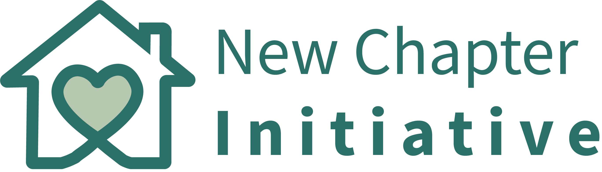
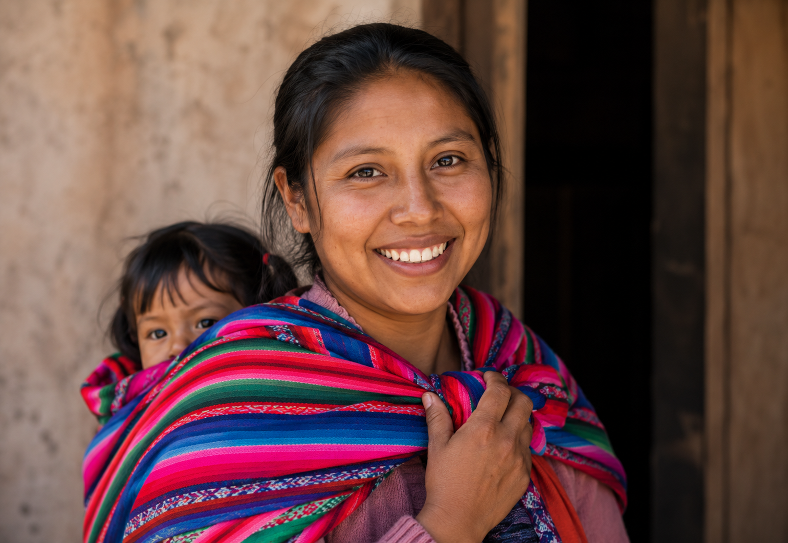

Help women in need
Help create a safe new chapter for women and children.

Women don't stay in situations of domestic violence because they
want to. Many stay because they have nowhere to go.
That's why
we're building Senderos Vida Plena in Jalisco, Mexico, a
transitional home where women and their children can find safety,
support, and a real opportunity to rebuild their lives.
This project is being built by people who believe that every woman
deserves the chance to start over.
Your support helps provide
safe housing, emotional support, legal guidance, life-skills
training, and a path toward independence for families navigating one
of the most difficult transitions of their lives.
Whether you
choose to donate once, give monthly, share our mission, or simply
help us spread the word, you become part of the foundation that
makes new beginnings possible.
Help us create a place where a
NEW CHAPTER can begin.
Your support helps provide safe housing, emotional support, and practical resources for women and children rebuilding their lives after domestic violence.
← Back to site